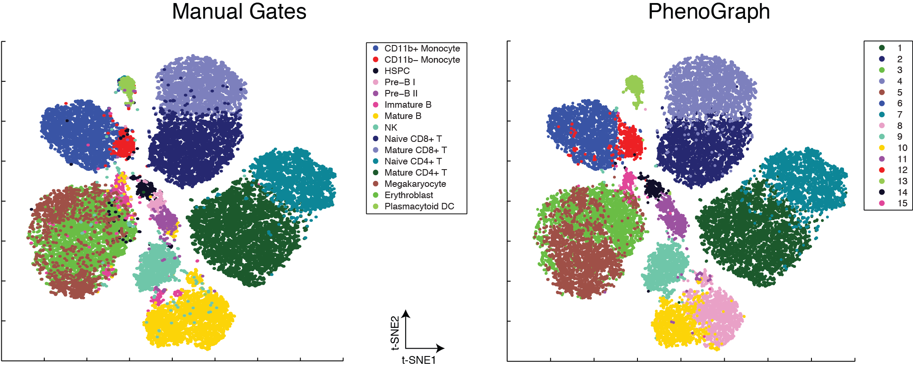

|
|
PhenoGraph |
 PhenoGraph provides a computationally efficient graph-based method for identifying
subpopulations in high-dimensional single-cell data. The algorithm represents the
underlying cellular population by a graph (or network) in which each cell is
connected to other cells that are phenotypically similar. This graph is then
clustered into distinct phenotypic communities, using modularity optimization.
While it can be used for any sample size, PhenoGraph is especially powerful for
large samples (thousands or hundreds of thousands of cells), where it is produces
high-quality results without downsampling.
If you use PhenoGraph for your publication, please cite the following article:
Levine JH, Simonds EF, Bendall SC, Davis KL, Amir ED, Tadmor MD, Litvin O,
Fienberg HG, Jager A, Zunder ER, Finck R, Gedman AL, Radtke I, Downing JR, Pe'er
D, Nolan GP. Data-Driven Phenotypic Dissection of AML Reveals Progenitor-like Cells that Correlate with Prognosis, Cell 2015
Data from the paper can be accessed here.
|
To use PhenoGraph, please download the associated matlab based tool:
here. These instructions explain how to run PhenoGraph from within CYT.
A Python implementation is also available.
Please find it on github.
|
|